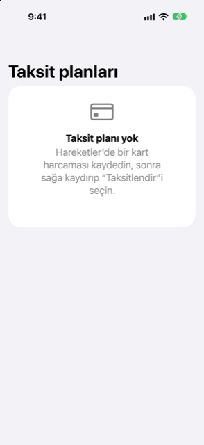

Kılavuz › Planlama
Taksit planları
Bir kart alışverişini aylara yayın ve etkisini görün.
Bir taksit planı, bankanızın size ay ay ödemenize izin verdiği bir kart alışverişidir; Damla'da tek büyük fatura yerine tarihli ödemeler olarak tutulur. Planları Plan sekmesinde Taksit planları altında bulursunuz ve tahmin, her ödemeyi vade tarihinde plan bitene kadar hesaba katar.

Ne zaman kullanılır
- Bankanız bir kart alışverişini taksitlendirmeye onay verdi ve size sayıları verdi.
- Bir ekstrede zaten taksit satırları görünüyor ("EMI 2 of 6" gibi bir satır) ve kalanın da sayılmasını istiyorsunuz.
- Taksitlerin kendi kendine bitmesini ve kartın normale dönmesini görmek istiyorsunuz.
- Bir alışveriş tamamen iade edildi ya da bankanın geri çağırması planı sonlandırdı.
Adım adım
- Alışverişin kart alışverişi olarak kaydedildiğinden emin olun; elle ya da bir banka uyarısından.
- Hareket sekmesini açın, alışverişi bulun, sağa kaydırın ve Taksitlendir'e dokunun.
- Ekranın başlığı Taksitlendir'dir; alışveriş ve tutarı üstte Alışveriş altında görünür. Sayıları Bankanızın belirttiği gibi doldurun: Aylık taksit, ay sayısı (2 ile 60 arası, adımlayıcıyla), Toplam plan ücreti (isteğe bağlı) ve İlk taksit'in tarihi.
- Dönüştür'e dokunun.
- Damla planı Plan sekmesinde Taksit planları altında gösterir: hâlâ ödenecek olan, "aylık taksit × ay ay · N kaldı · kart adı" gibi bir satır ve ücret varsa "Toplamda X ekstra maliyet" bilgisi.
Planı taahhüt etmeden denemek için: Plan sekmesinde Ya olursa'yı açın, Değişiklik ekle'ye dokunun, Taksitler türünü seçin ve bir ad, Aylık taksit, ay sayısı, ilk tarih ve ödemenin yapılacağı hesabı girin. Plan yalnızca dönüştürdüğünüzde gerçek olur.
Damla'ya bir cümleyle anlatmak
Yazarak da yapabilirsiniz. Taksit, EMI veya taksit sözü geçen bir cümle aynı soruları ("Aylık taksit ne kadar?", "Kaç ay?") getirebilir. Plan bir taahhüt olduğu için Damla sonucu önce Kontrol edip kaydedin altında gösterir: planın adı, taksit ve ay sayısı, ilk tarih ve varsa ücret. Planı oluştur'a dokunana kadar hiçbir şey yazılmaz; bu düğme "Bu bir taahhüt oluşturur, lütfen kontrol edin." notunun altında durur. Alışveriş zaten bir plandaysa Damla "Bu alışveriş zaten taksitte." der.
Kart ekstresinden
İçe aktarılan bir kart ekstresinde hangi ödeme olduklarını gösteren satırlar varsa (EMI 2/6, Instalment 3 of 12, taksit 02/06 gibi), içe aktarma bunları Bulunan taksitler altında listeler. Onay verene kadar hiçbir şey eklenmez. Satırlar günlük harcama değil, Taksitler kategorisine kaydedilir ve o ekstrenin faturasında bir harcama olarak kalır. Hâlâ gelecek olan ödemeler kartın sonraki vade tarihlerinde planınıza katılır. Sonraki her ekstrede sıradaki numara görünür, plan ilerler ve hiçbir ödeme iki kez sayılmaz. Plan son ödemeden sonra kendiliğinden tahminden çıkar.
Para nasıl hesaplanır
Bankanın teklifindeki sayıları kullanın. Formun altındaki not şöyle der: "Damla faiz oranı tahmin etmez." Planın rakamları söylediklerinizden çıkar:
- Aradaki her ödeme, söylediğiniz taksittir.
- Son ödeme, tüm ödemelerin toplamını tam olarak tutara ulaştıran tutardır.
- Toplam, ilk geçerli olanıdır: bankanızın belirttiği bir toplam, yoksa alışveriş artı belirtilen ücret, o da yoksa taksit çarpı ay sayısı.
- Planın ek maliyeti, bu toplam ile alışveriş arasındaki farktır.
Damla belirtilen sayıları kontrol eder: vade en az 1 ay olmalı, taksit ve alışveriş sıfırdan büyük olmalı ve tüm tutarlar tek bir para biriminde olmalıdır. Sayılar son ödemeye hiçbir şey bırakmıyorsa Damla kabul etmez ve nedenini söyler. Taksit çarpı ay sayısından çok farklı bir belirtilmiş toplam, plan üzerinde uyarı olarak saklanır. Bir plan yazılmadan önce her zaman onayınızı ister, böylece sayıları orada kontrol edebilirsiniz.
Bilmeniz iyi olur
- Orijinal alışveriş, kitaplarınıza gerçekleştiği günün harcaması olarak kalır. Plan, bitene kadar her ödemeyi vade tarihinde ekler. Taksit ödemeleri, kartın tipik ayı tahmininin dışında tutulur, böylece asla iki kez sayılmazlar.
- Her ödeme tahmine kendi tarihli ödemesi olarak ulaşır ve sonuncusundan sonra kendiliğinden durur. Bir ekstreden alınan plan kartın kendi sonraki ekstre vade tarihlerinde işler; kendiniz kurduğunuz plan, verdiğiniz İlk taksit tarihinden itibaren aylık işler.
- Banka planı bitirdiğinde veya geri çağırdığında, örneğin alışveriş tamamen iade edildiğinde, planın satırını kaydırın ve Planı iptal et'e dokunun. O günden sonraki ödemeler artık sayılmaz ve satır, kalanı göstermek yerine İptal edildi gösterir.
- Bir ekstreden yapılan plan bankanın kendi numaralandırmasını izler, böylece elle hiç girmeseniz bile adımlarla uyumda kalır.
- Bu rakamlar, bankanın sunduğu bir ödeme planını tarif eder. Planı almak ve size neye mal olacağı sizin kararınızdır, tavsiye değildir.
İlgili
Anlaşılmayan ya da eksik bir şey mi var? support@raveniq.ai adresine yazın ve hangi sayfa olduğunu belirtin.